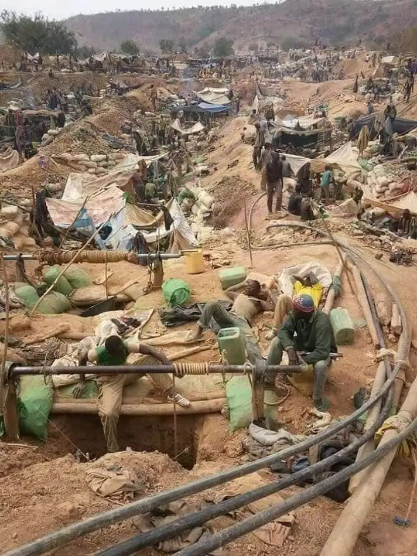
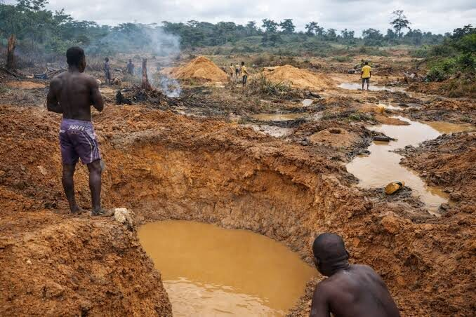
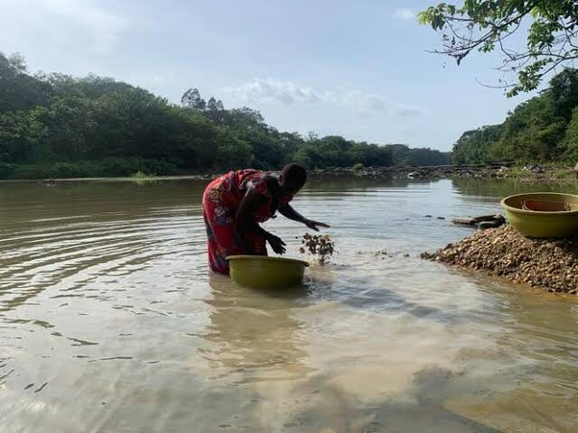
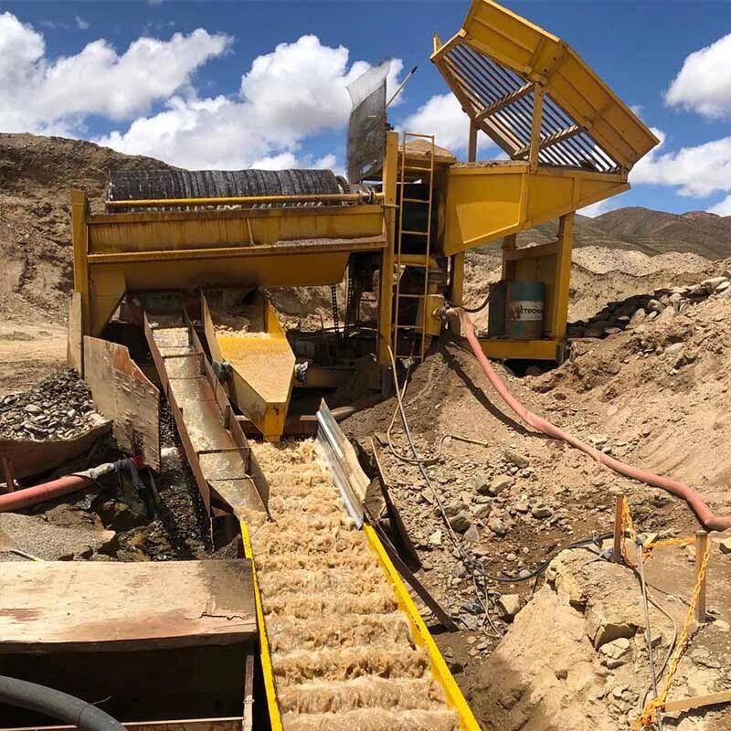
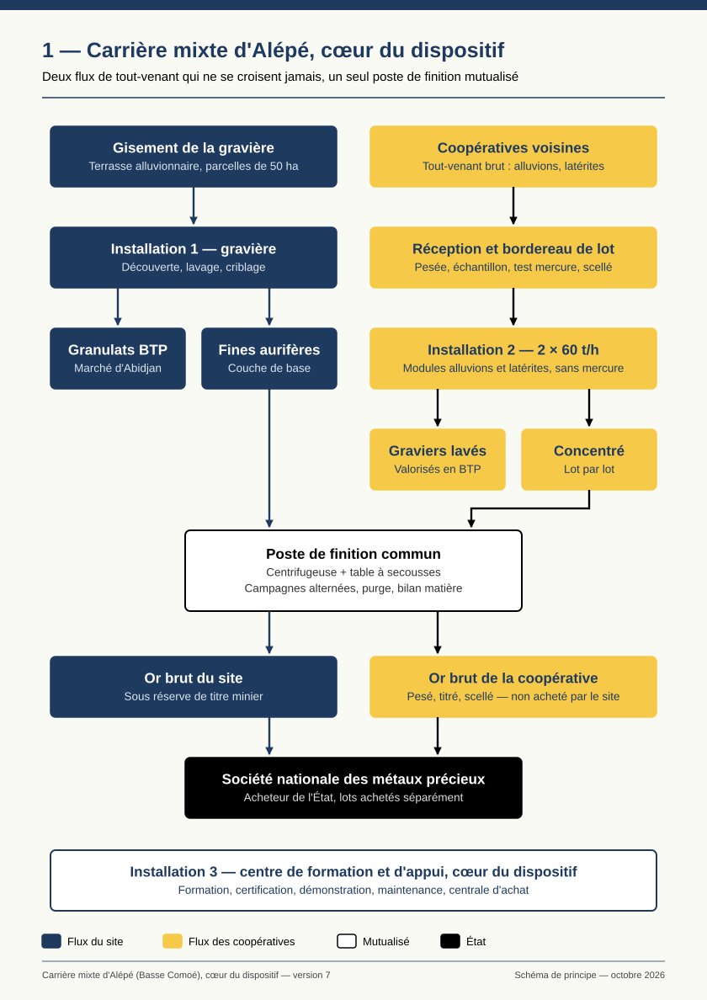
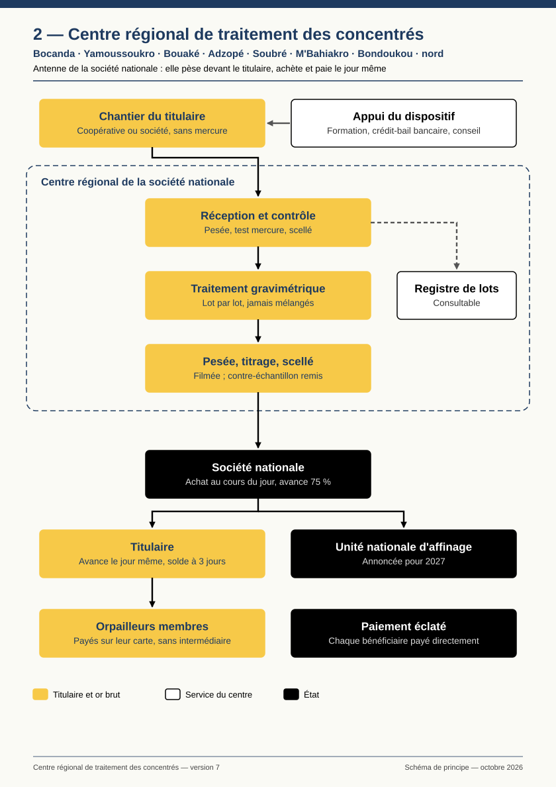
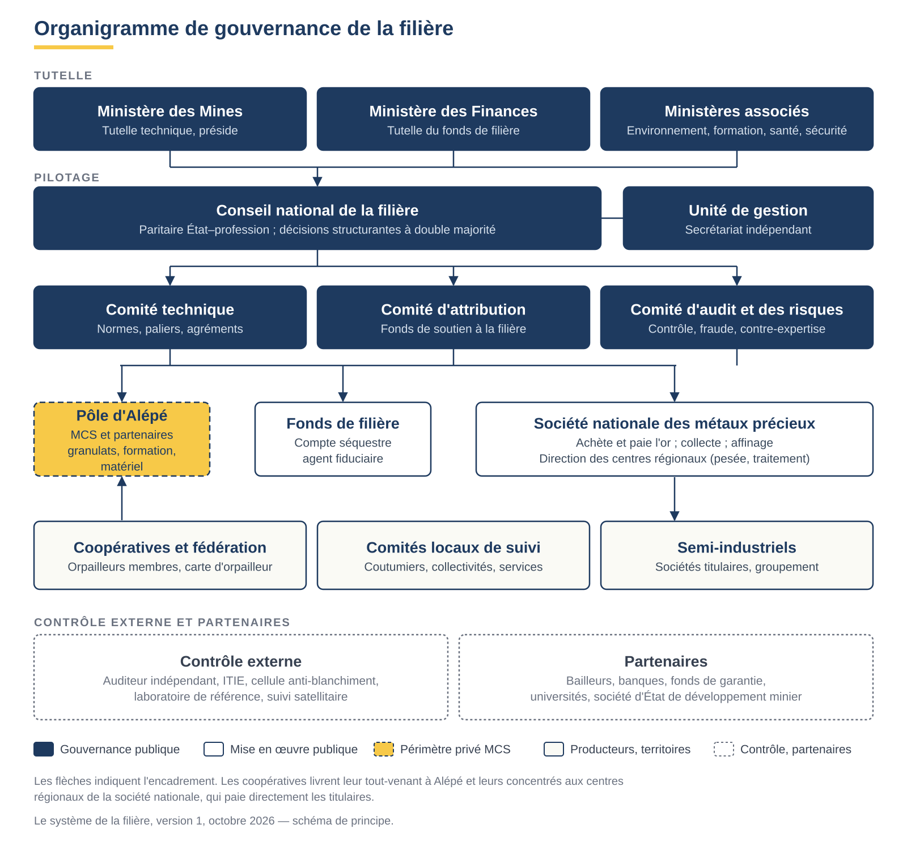

Côte d'Ivoire · Document confidentiel · Document de concept · Version 7 · Octobre 2026
Faire entrer l'or artisanal et semi-industriel dans le circuit officiel : sans mercure, tracé lot par lot, payé le jour même.
Le granulat bancarise le site. L'or rémunère les hommes. L'école les qualifie.
Photo d'illustration : gravière alluvionnaire sans lien avec le site du projet, encore recherché dans la zone d'Alépé.
L'orpaillage récupère mal l'or, le vend mal, empoisonne l'eau au mercure et échappe presque entièrement à l'État. En septembre 2026, l'État a choisi de durcir la répression tout en construisant les circuits officiels d'achat et d'affinage.



| Indicateur | Ordre de grandeur |
|---|---|
| Personnes vivant de l'orpaillage | Près d'un demi-million, dans 24 régions sur 31 ; une large majorité a moins de 35 ans |
| Sites clandestins actifs recensés | ≈ 800 en 2023, plus de 1 600 en mai 2026 |
| Production artisanale non déclarée | De l'ordre de 20 t/an (reconstitution, non mesurée) |
| Or sorti en contrebande | 30 à 40 t/an selon SWISSAID ; ce flux inclut vraisemblablement de l'or en transit depuis les pays voisins et n'est donc pas comparable à la seule production nationale |
| Mercure consommé | De l'ordre de 10 t/an |
| Or intercepté | ≈ 136 kg saisis depuis 2021 |
Sources publiques hétérogènes, parfois contradictoires : ordres de grandeur, non des mesures.
Les titulaires d'autorisations reçoivent formation, accès au crédit et conseil technique. En échange, leur or passe par un centre régional de la société nationale des métaux précieux, qui le pèse devant eux, le titre et l'achète pour le compte de l'État, en payant le jour même.
Avance de 75 % sur la carte de chaque membre le jour du dépôt ; trois jours plus tard, paiement direct de chaque bénéficiaire : membres, coopérative, État, banque, détenteurs coutumiers. Personne ne peut capter la part d'un autre.
La société nationale finance ses centres sur sa décote ; une contribution de filière de 0,5 à 0,6 % du cours finance la formation, le contrôle et le soutien à la filière. Le service est gratuit pour les titulaires.
Conseil national paritaire État–profession, à double majorité pour les décisions structurantes ; indicateurs publiés chaque mois ; ajustements automatiques écrits à l'avance.
| Niveau | Où | Rôle |
|---|---|---|
| Chantiers des titulaires | Autorisations artisanales (AEA) et semi-industrielles (AESI) | Extraction et pré-concentration sans mercure ; concentrés placés sous scellé. Aucun or n'est extrait sur le chantier. |
| Centres régionaux | Villes relais des bassins aurifères : Bocanda, Yamoussoukro, Bouaké, Adzopé, puis Soubré, M'Bahiakro, Bondoukou et le nord | Antennes de la société nationale : réception, test mercure, traitement gravimétrique, pesée, titrage, achat et paiement ; antenne de maintenance |
| Alépé, cœur du dispositif | Basse Comoé, ≈ 45 km d'Abidjan ; un seul site | Formation, certification, démonstration, centrale d'achat, maintenance, appui au montage des crédits ; traitement du tout-venant des coopératives voisines ; granulats |
| Filière artisanale — la priorité | Filière semi-industrielle — les volumes | |
|---|---|---|
| Autorisations d'or valides | 212, plus 152 en renouvellement | 480 |
| Surface | Jusqu'à 25 ha | 25 à 100 ha |
| Interlocuteur du centre | La coopérative uniquement, jamais l'orpailleur individuel | La société titulaire |
| Équipement | Peu ou pas ; lavage souvent au mercure | Beaucoup non équipées ; équipement en crédit-bail |
| Ce qui arrive au centre | Des concentrés sous scellé, préparés sans mercure sur le chantier — matériaux meubles uniquement (alluvions, latérites meubles, saprolites tendres) | |
| Coût du service | Aucun : centres financés par la société nationale | |
| Régime | Volontaire pendant le pilote ; obligatoire ensuite si l'État le décide | |
Procédés sans mercure, sécurité, gestion, environnement ; certification auditable par un tiers
Conteneur scellé par site, bordereau de lot, pesée contradictoire, suivi satellitaire
Avance au dépôt puis paiement éclaté sur la carte de chaque membre
Crédit-bail remboursé à la source ; fonds de garantie des bailleurs
Diagnostic, maintenance, meilleure récupération
À environ 45 km d'Abidjan, sur une terrasse alluviale de la Comoé, nous projetons une exploitation de granulats alluvionnaires pour le BTP du Grand Abidjan, socle économique d'un centre de formation de référence aux métiers de la petite mine et des carrières. Le site démonstrateur est encore recherché dans la zone d'Alépé ; les localisations précises des terrasses ciblées restent confidentielles tant que la question foncière n'est pas réglée avec les détenteurs coutumiers. Alépé n'est pas un centre régional et ne reçoit pas de concentrés.
Dans une terrasse alluvionnaire, le courant a trié les matériaux : les éléments tendres sont partis, le quartz roulé est resté. L'or, plus de sept fois plus dense que le quartz, a migré vers le bas et s'est concentré au contact du socle. La couche de base est à la fois le granulat le plus propre du gisement et sa couche la plus aurifère.
Aujourd'hui, sur ces terrasses, deux activités se croisent sans se voir : les gravières rejettent l'or avec leurs eaux de lavage ; l'orpailleur abandonne le granulat après en avoir tiré l'or au mercure. La carrière mixte traite cette ressource une seule fois et en tire les deux produits.


Seul endroit du dispositif où des coopératives livrent leur tout-venant brut. Capacité visée : deux modules de 60 t/h, sans mercure, sans cyanure, sans fusion.
Aucune autorisation artisanale ne se trouve aujourd'hui à moins de 50 km d'Alépé : l'approvisionnement dépendra de l'ouverture de la zone artisanale délimitée au cadastre qui touche son département et de la formalisation des orpailleurs ; l'habilitation du site à traiter la matière des coopératives reste par ailleurs à confirmer. L'investissement suit donc l'approvisionnement : unité pilote de 10 à 20 t/h, puis un module de 60 t/h sur apports contractualisés, le second si les volumes le confirment. La teneur du gravier de base n'entre dans aucune projection tant qu'elle n'est pas mesurée.
Formation de base obligatoire, puis parcours par paliers. Financé par le fonds de filière et les bailleurs.
Conduite, pré-concentration, procédés, gestion, environnement. Financé par les entreprises.
Maintenance des engins et installations gravimétriques, sur équipements de démonstration.
Formation qualifiante aux métiers des mines et des carrières, avec les programmes de l'État.
Les équipements sont présentés en fonctionnement réel : les futurs sites les voient, s'y forment, puis s'équipent.
Portée par la fédération des coopératives — non par MCS — elle mutualise pièces d'usure et pièces détachées.
Mécaniciens formés à Alépé, intervenant depuis les antennes des centres régionaux.
Un centre régional ne traite pas de tout-venant : il reçoit des concentrés. Il se réduit à un hangar de traitement gravimétrique, un poste de pesée, un coffre-fort certifié et une petite antenne de maintenance — ≈ 0,5 Md FCFA, un douzième de l'investissement d'Alépé.
| Étape | Garantie |
|---|---|
| Réception, scellé, bordereau | Chaque lot rattaché à une autorisation |
| Test de mercure | Lot contaminé refusé, titulaire suspendu |
| Traitement gravimétrique | Seul procédé admis ; aucun mélange ; purge entre titulaires |
| Pesée contradictoire | Devant le propriétaire, filmée, PV signé |
| Échantillons scellés | Titre contradictoire, contre-analyse possible |
| Coffre-fort certifié | Vidéosurveillance, assurance |
| Achat par la société nationale | 75 % le jour même ; solde à J+3, payé à chaque bénéficiaire |

Selon le cadastre minier, trois points à moins de 50 km des autorisations couvriraient la moitié des AEA d'or du pays ; dix en couvriraient près de 80 %.
Nombres d'AEA d'or à moins de 50 km des points candidats (cadastre minier, 27 septembre 2026), à recalculer par ville. Les données de production semi-industrielle pourront modifier l'ordre des phases.
Le semi-industriel apporte les volumes ; l'artisanal porte l'essentiel des vies, des risques et de l'impact. Un dispositif qui ne réussirait que sur le semi-industriel manquerait son objet.
Se fait connaître avec son site et son équipe ; identité enregistrée.
Formation de base : sécurité, procédés sans mercure, pré-concentration ; carte de l'orpailleur.
Adhésion à une coopérative agréée, seul intermédiaire avec le centre.
Kit de pré-concentration en crédit-bail, remboursé sur les ventes d'or.
Livraisons tracées sans mercure : matériel plus important, meilleur crédit, protection sociale.
Proposition de départ, servant de base de négociation à la charte de répartition que chaque coopérative adopte en assemblée générale. Chaque part est versée directement par la société nationale à son bénéficiaire.
Exemple purement illustratif d'un lot de 400 g (règles de répartition V3), exprimé en part de la valeur de l'or au cours ; le prix de la formule de l'État, le taux de redevance et les montants de crédit-bail restent à confirmer. Ordre de prélèvement : 0. État (redevance et taxes) · 1. crédit-bail · 2. fonds de réhabilitation · 3. frais d'exploitation · 4 à 7. coutumiers, collectivités, protection, réserves · 8. orpailleurs. Les rangs 4 à 7 représentent de l'ordre de 5 %, 2 %, 1 % et 4 % de la valeur nette distribuable, qui reste après les rangs 0 à 3 ; les orpailleurs en reçoivent le solde, soit 88 %.
de l'or contenu récupéré (objectif), contre ≈ un tiers aujourd'hui ; à confirmer par les essais, notamment sur les pertes d'or fin à la pré-concentration
FCFA par mois de revenu visé ; plancher de 150 000 FCFA garanti par les réserves
FCFA d'épargne après un an (5 % par défaut, retirable)
FCFA par mois pour maladie, accidents et mutuelle
Hypothèse de productivité : 11 à 13 g d'or par mois et par orpailleur, soit 0,5 à 0,6 t de tout-venant par jour à 1,5 g/t ; à recaler sur les essais et l'enquête de terrain. Au-delà de 600 000 FCFA par mois (moyenne sur la campagne trimestrielle), surplus partagé : 30 % orpailleur / 40 % fonds de développement de la coopérative / 30 % fonds de filière.
Plus de puits profonds. Pré-concentration sans mercure (débourbage, sluice ou jig, concentrateur centrifuge). Ni battée, ni amalgamation, ni fusion : le concentré part sous scellé.
Conteneurs numérotés fournis par le centre ; tournées déclarées à l'avance ; masse livrée rapprochée de la production déclarée et de la capacité du matériel. Chaque membre est informé directement de chaque lot.
Aucun travailleur de moins de 18 ans ; EPI et premiers secours ; priorité aux riverains ; place réservée aux femmes ; mécanisme de réclamation ouvert aux membres, aux riverains et aux détenteurs coutumiers, traité par le comité local de suivi dans un délai fixé.
Un conseil national paritaire de la filière, créé par arrêté interministériel Mines–Finances : six voix pour l'État, six pour la profession ; la sécurité publique et la souveraineté sur l'or relèvent de la compétence propre de l'État. Double majorité pour la formule de prix, la contribution de filière, les règles de répartition, le passage obligé, l'ouverture d'un centre et les clés du fonds de soutien.

MCS et ses partenaires privés n'interviennent qu'à Alépé : granulats, traitement du tout-venant des coopératives voisines, centre de formation, distribution de matériel.
Paiement immédiat — 75 % de la valeur estimée prudente du lot, le jour même, sur la carte de chaque membre ; solde à J+3
Paiement éclaté — la coopérative ne détient jamais l'argent de ses membres
Prix au cours du jour et clause de compétitivité régionale
Compte à trois poches — disponible, épargne, protection
Carte de l'orpailleur — identité professionnelle ; historique de production qui ouvre l'accès au crédit
Intégration des informels — agents de collecte agréés ; préfinanceurs agréés, remboursés à la source à un coût plafonné ; fenêtre de régularisation de 24 mois
Gouvernance paritaire — double majorité État–profession
Stabilisateurs automatiques — seuils et réponses écrits à l'avance
Prime or responsable — scénario : prime obtenue sur l'or certifié, reversée aux coopératives des paliers les plus élevés
Passerelle vers l'entreprise — de l'orpailleur recensé à la petite exploitation semi-industrielle
Caution de réhabilitation — restituée si la remise en état est certifiée
Référentiels visés — dispositif conçu pour être compatible avec les objectifs de la Convention de Minamata, le guide de l'OCDE sur le devoir de diligence et les exigences de transparence de l'ITIE ; compatibilité à vérifier pendant le programme de vérification
| Indicateur publié chaque mois | Seuil | Réponse automatique |
|---|---|---|
| Écart avec le meilleur prix officiel d'un pays voisin | > 2 % pendant deux mois | Baisse de la décote ; compensation temporaire par la réserve |
| Délai moyen de paiement du solde | > 5 jours | Pénalité versée aux titulaires ; plan correctif |
| Taux de contestation des pesées | > 2 % des lots | Audit du centre ; rotation des agents |
| Or remis par un centre | < 500 kg/an sur deux ans | Regroupement ou antenne mobile |
| Adhésion dans une région | Baisse sur deux trimestres | Mission d'écoute ; formation ; examen des prix locaux |
| Lots refusés pour mercure | > 3 % dans une coopérative | Suspension de l'avance ; formation obligatoire |
| Réserve de stabilisation | Pleine | Baisse de la contribution de filière |
Un or déclaré, tracé et vendu dans le circuit officiel ; des taxes prélevées à la source ; zéro mercure ; une formalisation fondée sur l'accompagnement ; une assiette fiscale élargie sans dépense budgétaire ; l'accès permanent aux données.
Un cadre juridique praticable, la création du conseil national paritaire, l'accord sur le fonds de filière et son compte séquestre, puis, le moment venu, le passage obligé.
Un approvisionnement régulier et tracé ; un réseau de centres léger pour ≈ 0,7 % de la valeur de l'or, neutre pour ses comptes.
Direction des centres, formule de prix, avance au dépôt, paiement éclaté, contre-expertise, contribution de filière.
Un revenu visé de 500 000 à 600 000 FCFA par mois, ≈ 2,4 fois plus qu'aujourd'hui, payé le jour même avec un plancher ; épargne et protection sociale ; service gratuit, statut, formation, accès au matériel.
Pré-concentrer sans mercure, livrer une matière d'origine connue, passer par les centres.
Pour les non-équipées, le moyen de démarrer ; pour toutes, un acheteur public, un service gratuit, du crédit, de la formation et du conseil ; un régime transitoire pour les équipées.
Faire passer leur production par les centres.
Collectivités, communautés et détenteurs coutumiers : parts versées selon une charte écrite ; emplois ; rivières moins polluées ; terres réhabilitées ; un comité local de suivi. Collecteurs et financeurs de chantiers aujourd'hui informels : une place légale, comme agents de collecte agréés, rémunérés à la commission, ou comme préfinanceurs agréés, remboursés à la source.
Participation au comité local, appui à la médiation ; respect des règles et du plafond de coût du préfinancement.
Banques : des emprunteurs formés, à production connue et remboursement prélevé à la source. Bailleurs : un effet de levier, un dispositif qui se finance ensuite seul, un impact mesurable sur le mercure et la formalisation.
Des produits de crédit-bail adaptés ; l'amorçage du fonds de filière, un fonds de garantie, le programme de vérification et le pilote.
Fabricants : un site de démonstration, un réseau de maintenance, un débouché mutualisé dans un cadre neutre. BTP : des granulats alluvionnaires de proximité depuis Alépé.
Sponsoring du site de formation, prix et disponibilité des pièces ; contrats d'enlèvement de granulats.
Le concept et l'organisation sont définis ; ils ne sont pas encore démontrés. Chaque étape a une condition de passage fixée à l'avance.
Ingénieur indépendant ; essais de laboratoire ; enquête de terrain ; analyse juridique ; données semi-industrielles.
Récupération confirmée ; cadre praticable ; accord de principe sur le fonds de filière.
10 à 20 t/h ; coopératives volontaires ; premiers kits ; 6 à 12 mois.
Critères fixés à l'avance : récupération, apports, revenus, incidents.
Granulats ; centre de formation ; premier module de 60 t/h si apports contractualisés.
Autorisation, étude d'impact, accord foncier.
Bocanda, bassin le plus dense en autorisations, avec des titulaires volontaires.
Pilote concluant ; direction des centres en place ou gestionnaire transitoire ; conseil national installé ; fonds de filière amorcé ; fonds de garantie en place.
Yamoussoukro, Bouaké, Adzopé, puis Soubré, M'Bahiakro, Bondoukou, le nord.
Résultats du premier centre ; prix jugé équitable par les titulaires ; analyse sécuritaire pour le nord.
Aucune projection de revenu avant les essais ; charte en pourcentages ; plancher porté par les réserves.
Essais en laboratoire, puis pilote avant tout engagement ; essais distincts alluvions / latérites et saprolites, dont l'or est souvent plus fin.
Rattachement de chaque lot à une autorisation, cohérence avec la production déclarée et la capacité du matériel, suivi satellitaire, contrôles inopinés.
Paiement éclaté à la source ; préfinancement plafonné ; audit annuel.
Prix au cours du jour ; clause de compétitivité régionale ; avance au dépôt ; contreparties que l'informel n'offre pas.
Dialogue précoce avec l'administration ; pilote sur des coopératives déjà titulaires ; adhésion volontaire.
Acheteur agréé transitoire désigné par l'État.
Contribution réduite à 0,5 % ; démonstration de l'économie réalisée ; à défaut, fraction de la redevance affectée par la loi de finances.
Agents de collecte et préfinanceurs agréés ; fenêtre de régularisation de 24 mois ; formation ouverte à tous ; comité local ; appui des autorités et des chefferies.
Investissement par modules, conditionné aux apports contractualisés.
≈ 10 % de la capacité annoncée de l'unité nationale d'affinage ; au cours retenu de 4 000 USD l'once, une valeur approchant 730 Md FCFA par an. Ces objectifs reposent sur des hypothèses non encore mesurées (teneur, récupération, productivité, production semi-industrielle) et seront recalés à chaque étape. L'objectif de 10 t n'est pas une projection : c'est la cible autour de laquelle le réseau sera dimensionné, une fois la production semi-industrielle connue.
| Filière | Contribution visée | Ce qu'elle suppose |
|---|---|---|
| Artisanale | ≈ 3 t/an (1,8 à 3,8 t) | 20 000 orpailleurs formés en 10 ans, équipés et adhérents |
| Semi-industrielle | ≈ 7 t/an | Équipement et raccordement des exploitations sur matériaux meubles ; ordre de grandeur : ≈ 15 kg/an en moyenne pour chacune des ≈ 480 autorisations valides, hypothèse à vérifier sur les données de l'administration |
| Total | ≈ 10 t/an | Une dizaine de centres régionaux d'≈ 1 t/an chacun |
| Composante | Investissement estimé |
|---|---|
| Programme de vérification | 300 à 580 M FCFA sur 12 mois |
| Unité pilote (10–20 t/h) | ≈ 400 M FCFA |
| Alépé : granulats | 3,6 à 5,5 Md FCFA |
| Alépé : tout-venant, 2 × 60 t/h | 1,8 à 2,5 Md FCFA, module par module |
| Centre de formation | ≈ 475 M FCFA (50 % subventionné) ; ≈ 240 M FCFA/an de fonctionnement |
| Centre régional (léger) | ≈ 0,5 Md FCFA ; ≈ 5 Md pour dix centres sur sept ans |
| Registre de lots numérique | 60 à 120 M FCFA sur 3 ans |
| Amorçage du fonds de filière | ≈ 1,5 Md FCFA |
| Fonds de roulement des avances | ≈ 4,4 Md FCFA, porté par la société nationale |
| Fonds de garantie, centrale d'achat | À dimensionner |
Estimations de cadrage, non adossées à des devis, à réviser après le programme de vérification.
C'est d'abord un dialogue, à un stade où le dispositif peut encore être amendé : un premier entretien avec chacun, puis un groupe de travail restreint, préfiguration du conseil national de la filière, pour suivre le programme de vérification et préparer le pilote.
| Interlocuteur | Proposition |
|---|---|
| Administration des mines | Le cadre du dispositif, la production semi-industrielle, le régime transitoire, la désignation d'un correspondant |
| Société nationale des métaux précieux | Direction des centres, formule de prix, avance au dépôt, paiement éclaté, contre-expertise, contribution de filière, registre des lots |
| Ministère chargé des finances | Le fonds de filière, son compte séquestre et l'absence de dépense budgétaire |
| SODEMI (société d'État de développement minier) | Les données géologiques des zones ciblées |
| Coopératives et titulaires | Titulaires volontaires pour le pilote et le premier centre ; représentation au conseil national |
| Opérateurs de paiement | Paiement sur la carte de l'orpailleur, paiement éclaté et épargne |
| Banques et sociétés de crédit-bail | Produit de crédit-bail remboursé à la source |
| Fabricants | Démonstration, formation et sponsoring, dans un cadre de neutralité |
| Partenaires financiers | Programme de vérification et pilote ; amorçage du fonds de filière (≈ 1,5 Md FCFA) ; fonds de garantie du crédit aux titulaires |